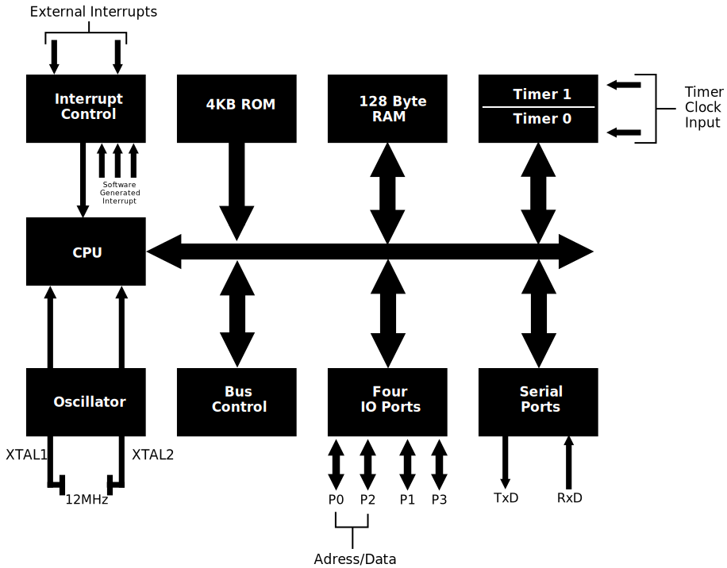

Microcontroller
- A microcontroller is a combination of two words: 'micro' and 'controller'. 'Micro' means small in size, as we measure sizes in micro, nano, etc. Here, 'micro' refers to a measurement unit. 'Controller' means a device that controls the operation of any system. Combining these two words, we can say that a microcontroller is a small device that controls the operation of a particular system. We can also say that a microcontroller is a microprocessor in which all peripheral devices are integrated. That's why we call a microcontroller a 'system on chip' or 'computer on chip'. When all systems, peripherals, and components are integrated into a single chip, we call it a microcontroller.
- Microcontrollers are used in many applications, especially in embedded systems, to perform specific tasks. For example, they are used in washing machines or microwave ovens to control the operation of these devices. In a microwave oven, a microcontroller is used to control the temperature. Microcontrollers are used to perform such specific tasks.
- A microcontroller performs a specific type of task, and we choose its peripherals according to that task.
- A microcontroller includes a CPU, ROM, RAM, timer, counter, oscillator circuit, analog-to-digital converter, digital-to-analog converter, serial I/O ports, interrupt logic, and other functional blocks. All these components are integrated into a single chip. Therefore, we can say that a microcontroller is a complete system. However, we choose peripherals according to the application. For example, the task of a washing machine is to wash clothes. Therefore, we will select all the components required for this task in a microcontroller. The same applies to a microwave oven.
8051 Microcontroller: Introduction and History
- In 1981, Intel introduced an 8-bit microcontroller called the 8051. An 8-bit microcontroller means
it can process 8 bits of data at a time.
- The 8051 microcontroller was a revolutionary product at the time of its release. Its introduction marked a significant milestone in the field of embedded systems, providing a compact and efficient solution for controlling electronic devices.
- It was referred to as a system on a chip because it had a CPU, RAM, on-chip ROM, timers, counters,
and serial I/O ports all on a single chip.
- The term "system on a chip" (SoC) is used because the 8051 integrates multiple components that are typically found in a computer system, all onto a single chip. This includes the central processing unit (CPU) for processing data, random-access memory (RAM) for temporary data storage, read-only memory (ROM) for permanent data storage, timers and counters for managing time-related operations, and serial input/output ports for communication.
- NMOS (N-type Metal-Oxide-Semiconductor) technology was initially used to manufacture 8051 microcontrollers because it offered high-speed performance. However, NMOS technology consumes more power, which is not ideal for battery-powered devices. To address this, the industry shifted to using CMOS (Complementary Metal-Oxide-Semiconductor) technology, which is more energy-efficient and extends the battery life of portable devices.
- It is widely used in embedded systems, consumer electronics, automotive systems, robotics, and
security cameras.
- The versatility and reliability of the 8051 microcontroller make it an ideal choice for a wide range of applications. In embedded systems, it provides precise control over various electronic devices. In consumer electronics, it helps manage functions in devices like washing machines and microwave ovens. In automotive systems, it is used for engine control, and in robotics, it provides control over robotic movements. Security cameras use 8051 microcontrollers for image processing and data handling.
- Microcontroller-based systems, such as those using the 8051, are compact in size because they consolidate multiple functions onto a single chip. This compactness makes the devices easier to handle and integrate into various products.
Difference Between Microprocessor and Microcontroller
Microprocessors and microcontrollers are fundamental components in the field of embedded systems and computing.

Features of 8051 Microcontroller
The 8051 microcontroller is widely used in embedded systems due to its numerous features and versatility. This transcript outlines its key features and applications.
- Complete Computer System on a Single Chip
- Description: The 8051 microcontroller is considered a complete computer system on a single chip.
- Components: It includes a CPU, RAM, ROM, serial ports, parallel ports, interrupts, and timers.
- Limitations: Although it’s a complete system, it is not as powerful as a typical computer, suitable for low-scale applications.
- Clock Speed
- Operating Speed: 8051 operates at a speed of 12 MHz.
- Crystal Oscillator: A crystal oscillator is connected to provide a 12 MHz clock frequency.
- Arithmetic Logic Unit (ALU)
- ALU Size: It has an 8-bit ALU.
- Functionality: It can perform 8-bit arithmetic and logical operations in a single machine cycle.
- Data Lines
- Data Line Size: The microcontroller has 8-bit data lines.
- Memory Exchange: It can exchange 8 bits of data with memory in a single machine cycle.
- Harvard Architecture
- Architecture: 8051 follows the Harvard architecture.
- Memory Separation: Separate memory for program (stored in ROM) and data (stored in RAM).
- Example: In a temperature control program, the program is stored in ROM and the temperature data in RAM.
- On-chip ROM and RAM
- Internal ROM: 4 KB of internal ROM.
- External ROM: Can interface up to 64 KB of external ROM.
- Internal RAM: 128 bytes of internal RAM.
- External RAM: Can interface up to 64 KB of external RAM.
- I/O Ports
- Number of Ports: Four I/O ports.
- Port Size: Each port is 8 bits.
- Interfacing: Can be used for interfacing peripherals like keyboards, displays, stepper motors, LEDs, and switches.
- Bi-directional: All I/O ports are bi-directional.
- On-chip ROM and RAM
- Internal ROM: 4 KB of internal ROM.
- External ROM: Can interface up to 64 KB of external ROM.
- Internal RAM: 128 bytes of internal RAM.
- External RAM: Can interface up to 64 KB of external RAM.
- I/O Ports
- Number of Ports: Four I/O ports.
- Port Size: Each port is 8 bits.
- Interfacing: Can be used for interfacing peripherals like keyboards, displays, stepper motors, LEDs, and switches.
- Bi-directional: All I/O ports are bi-directional.
- Serial Communication
- Communication Types: Supports both synchronous and asynchronous serial communication.
- Pins: Uses TDX and RDX pins for serial communication.
- Timers
- Number of Timers: Two 16-bit timers.
- Applications: Used for delay generation and as counters in industrial applications.
- Interrupts
- Number of Interrupts: Five different input interrupts (two hardware and three software interrupts).
- Features: All interrupts are vector interrupts with well-defined priorities, which can be changed via programming.
- Power Saving Modes
- Modes: Two power saving modes - Idle mode and Power down mode.
- Use Case: Ideal for battery-operated embedded systems like remote controls.
- Address Lines
- Address Line Size: 16-bit address lines.
- Memory Interface: Can interface 64 KB of external ROM and RAM simultaneously due to different control signals for ROM and RAM.
- Efficiency
- Advantages: Saves cost and power, makes the circuit compact, and is efficient for small-scale applications.
Pin Diagram of 8051 Microcontroller
- The 8051 microcontroller is available in a 40-pin Dual Inline Package (DIP). DIP refers to a type of packaging for integrated circuits (ICs), where the IC is protected and can be easily handled, assembled onto a Printed Circuit Board (PCB), and protected from damage. Various packaging types include SIP (Single Inline Package), CDIP (Ceramic Dual Inline Package), ZIP (Zigzag Inline Package), among others. Each package type has different configurations, which refer to the spacing between pins and the rows of pins. These configurations are standardized to ensure compatibility and protection of the IC.
- The 8051 microcontroller, being a DIP IC, has 40 pins. These pins are essential for connecting the microcontroller to other components in a circuit.
- The 8051 microcontroller features four 8-bit bidirectional I/O ports named Port 0, Port 1, Port 2, and Port 3. Each port consists of 8 pins, and they function as bidirectional I/O ports, meaning they can operate as both input and output ports. Let’s discuss the function of each pin:
- Port 0 (P0.0 to P0.7): Port 0 serves as an 8-bit bidirectional I/O port. It can also function as a multiplexed address and data bus during external memory access.
- Port 1 (P1.0 to P1.7): Port 1 is an 8-bit bidirectional I/O port. Unlike Port 0, it does not have any dual function, making it solely an I/O port.
- Port 2 (P2.0 to P2.7): Port 2 serves as an 8-bit bidirectional I/O port. It can also be used as the higher-order address bus during external memory access, in combination with Port 0.
- Port 3 (P3.0 to P3.7): Port 3 is an 8-bit bidirectional I/O port with additional functionalities. Each pin can be used for specific alternate functions like serial communication, external interrupts, and timer/counter inputs.
- Pin 9 (RST): This pin is used to reset the microcontroller. A high signal on this pin for at least two machine cycles will reset the microcontroller.
- Pin 18 and 19 (XTAL1 and XTAL2): These pins are connected to an external crystal oscillator to provide the clock frequency for the microcontroller’s operation.
- Pin 20 (GND): This pin is connected to the ground of the power supply.
- Pin 31 (EA/ VPP): External Access enable pin. It should be connected to Vcc for internal program memory access.
- Pin 40 (Vcc): This pin is connected to the positive supply voltage.
Block Diagram of 8051 Microcontroller
- The CPU (Central Processing Unit) is the core component of the 8051 microcontroller. It is connected to an oscillator that connects to an external crystal between terminals XTAL1 and XTAL2. This crystal has a frequency of 12 MHz. The entire circuit functions based on this frequency. The crystal frequency provided is crucial for the microcontroller's operation as the CPU executes instructions in sync with the clock.
- The CPU contains an Arithmetic and Logic Unit (ALU) that executes instructions. Instructions are processed sequentially in sync with the clock signal, and the ALU performs arithmetic and logical operations required by the instructions.
- The CPU is also connected to an interrupt control unit. The 8051 microcontroller has a total of 5 interrupts: 2 external hardware interrupts and 3 software-generated interrupts. There are two timers, Timer 0 and Timer 1, which can trigger interrupts when they overflow. Additionally, there is one interrupt related to serial communication. The interrupt control unit manages the priority and execution of these interrupts by the CPU.
- The 8051 microcontroller is based on the Harvard architecture, which means it has separate memory spaces for program and data. The program memory is typically stored in ROM (Read-Only Memory), and the data memory is stored in RAM (Random Access Memory).
- The microcontroller has 4KB of on-chip ROM, with an address range from 0000H to 0FFFH, to store the program. It also has 128 bytes of on-chip RAM for data storage.
- For external interfacing, the 8051 has an 8-bit data bus and a 16-bit address bus. The bus control unit handles the address and data lines. The microcontroller has four I/O ports (Port 0, Port 1, Port 2, and Port 3) with multiple functionalities:
- Port 0: It serves as an 8-bit bidirectional I/O port and also as a multiplexed address and data bus (AD0 to AD7) for external memory interfacing.
- Port 1: It is an 8-bit bidirectional I/O port without any additional functions.
- Port 2: It serves as an 8-bit bidirectional I/O port and also provides the higher-order address bus (A8 to A15) for external memory interfacing.
- Port 3: It is an 8-bit bidirectional I/O port with additional functionalities:
- Pin 3.0 (RXD): Serial input (receive data)
- Pin 3.1 (TXD): Serial output (transmit data)
- Pin 3.2 (INT0): External interrupt 0
- Pin 3.3 (INT1): External interrupt 1
- Pin 3.4 (T0): Timer 0 external input
- Pin 3.5 (T1): Timer 1 external input
- Pin 3.6 (WR): External memory write strobe
- Pin 3.7 (RD): External memory read strobe
- Serial communication is supported via the serial port, which is integrated into Port 3. This port handles both serial transmission (TXD) and reception (RXD).
- The 8051 microcontroller includes two 16-bit timers/counters (Timer 0 and Timer 1). These timers can operate as counters when provided with an external clock input, and their inputs are also integrated into Port 3.
- The 8051 microcontroller's complete structure includes the CPU, oscillator, interrupt control, program memory (4KB ROM), data memory (128 bytes RAM), 4 I/O ports, and serial communication support. The microcontroller can handle multiple functionalities through its ports and internal units, making it versatile for various applications.